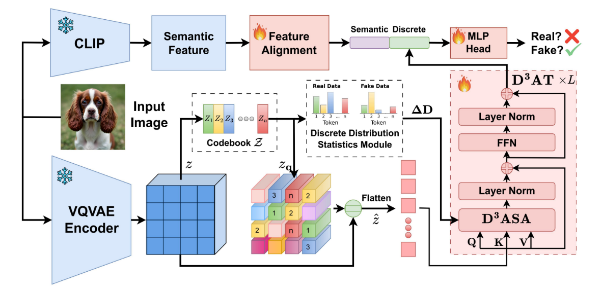

D³QE: Learning Discrete Distribution Discrepancy-aware Quantization Error for Autoregressive-Generated Image Detection
Abstract
The emergence of visual autoregressive (AR) models has revolutionized image generation while presenting new challenges for synthetic image detection. Unlike previous GAN or diffusion-based methods, AR models generate images through discrete token prediction, exhibiting both marked improvements in image synthesis quality and unique characteristics in their vector-quantized representations. In this paper, we propose to leverage Discrete Distribution Discrepancy-aware Quantization Error D³QE for autoregressive-generated image detection that exploits the distinctive patterns and the frequency distribution bias of the codebook existing in real and fake images. We introduce a discrete distribution discrepancy-aware transformer that integrates dynamic codebook frequency statistics into its attention mechanism, fusing semantic features and quantization error latent. To evaluate our method, we construct a comprehensive dataset termed ARForensics covering 7 mainstream visual AR models. Experiments demonstrate superior detection accuracy and strong generalization of D³QE across different AR models, with robustness to real-world perturbations.
Introduction & Contributions
Autoregressive (AR) models introduce new detection challenges: forgery artifacts are encoded in the discrete latent space (via discrete token prediction), not in typical pixel noise, rendering conventional detectors ineffective. Our key insight is the stark Discrete Distribution Discrepancy (D³D) between real and AR-generated images. Real data exhibits a long-tail token distribution, while fake images show probability mass concentrated in high-frequency regions, indicating polarized codebook usage.
Our Main Contributions:
- D³QE Framework: We propose D³QE, a novel framework that systematically analyzes and leverages both the codebook distribution bias and the quantization error inherent in the AR generation process.
- D³AT Transformer: We introduce a specialized transformer with Discrepancy-Aware Self-Attention (D³ASA). This mechanism integrates dynamic codebook frequency statistics ($\Delta D$) to effectively fuse the quantization error latent with robust semantic features.
- ARForensics Benchmark: We establish the first comprehensive dataset, ARForensics, for AR-generated image detection, covering 7 mainstream visual AR models to rigorously test generalization and robustness.
Methodology: The D³QE Pipeline
The D³QE framework fuses local discrete artifacts with global semantic features through four key components:
- Quantization Error Representation: A frozen VQVAE Encoder extracts the error between the continuous latent map z and its discrete representation z_q.
- Discrete Distribution Statistics: Computes the discrete distribution discrepancy (ΔD) from real vs. fake token usage statistics.
- D³AT Transformer: Its core Discrepancy-Aware Self-Attention (D³ASA) module processes the quantization error, guided by global ΔD.
- Semantic Feature Fusion: A frozen CLIP extracts semantic features, which are fused with the D³AT's output for final classification.
Dataset Visualization
The ARForensics dataset contains samples from 7 mainstream AR models ( LlamaGen, VAR, Infinity, Janus-Pro, RAR, Switti, Open-MAGVIT2), serving as a robust visual benchmark for testing the generalization of ai-generated image detection models.
Experiments
We evaluate $\text{D}^3\text{QE}$ extensively on our proposed **ARForensics** benchmark, demonstrating its superior performance in both intra-model testing and cross-model generalization.
Table 1: Intra-Model Detection Performance (Accuracy / A.P.)
This table summarizes the performance of various methods when trained and tested on the same model from the ARForensics dataset. **$\text{D}^3\text{QE}$ demonstrates superior overall performance (Mean Acc. / A.P.)** by effectively leveraging the discrete distribution artifacts.
| Method | LlamaGen Acc. / A.P. |
VAR Acc. / A.P. |
Infinity Acc. / A.P. |
Janus-Pro Acc. / A.P. |
RAR Acc. / A.P. |
Switti Acc. / A.P. |
Open-MAGVIT2 Acc. / A.P. |
Mean Acc. / A.P. |
|---|---|---|---|---|---|---|---|---|
| CNNSpot [55] | 99.94 / 99.94 | 50.26 / 70.53 | 50.87 / 78.06 | 95.70 / 99.95 | 50.80 / 61.67 | 93.91 / 56.58 | 50.12 / 57.39 | 64.90 / 80.21 |
| FreDect [11] | 99.80 / 100.00 | 52.88 / 88.18 | 50.17 / 60.13 | 88.94 / 99.54 | 52.52 / 83.31 | 59.01 / 50.04 | 57.09 / 86.53 | 64.49 / 82.39 |
| Gram-Net [25] | 99.57 / 99.98 | 55.04 / 84.57 | 52.38 / 76.80 | 74.48 / 97.33 | 49.95 / 52.72 | 57.74 / 88.66 | 53.72 / 50.08 | 62.75 / 79.11 |
| LNP [23] | 99.48 / 99.99 | 49.64 / 55.42 | 49.76 / 49.94 | 99.53 / 99.98 | 49.69 / 55.61 | 70.28 / 95.83 | 54.67 / 76.81 | 67.58 / 82.74 |
Table 2: Cross-Model Generalization
This table presents the results of cross-model testing, where the model is trained on one AR model (e.g., LlamaGen) and tested on an unseen model (e.g., VAR). $\text{D}^3\text{QE}$ demonstrates exceptional generalization ability, significantly outperforming competitors, confirming that the extracted discrete distribution discrepancy is a general artifact of AR models. **(Full table in the paper)**
Table 3: Robustness to Post-Processing Perturbations
This table evaluates the model's robustness under common real-world corruptions, such as JPEG compression and Gaussian blurring. $\text{D}^3\text{QE}$ maintains high detection accuracy across all perturbation levels, validating its resilience against image manipulation, which is critical for practical applications. **(Full table in the paper)**
Table 4: Ablation Study on D³QE Components
The ablation study confirms the contribution of each proposed module: the Quantization Error feature, the Distribution Discrepancy ($\Delta D$) feature, and the $\text{D}^3\text{ASA}$ mechanism. Results show that combining both $\Delta D$ and the Quantization Error via the $\text{D}^3\text{ASA}$ module yields the best performance, validating our core design principles. **(Full table in the paper)**
Video Presentation
Additional Results/Demos
Visualization of feature maps across different layers.
Demonstration of detection on images with post-processing.
Comparison of D³QE vs. baselines on challenging samples.
Poster
BibTeX
@article{Zhang2025D3QE,
title={D³QE: Learning Discrete Distribution Discrepancy-aware Quantization Error for Autoregressive-Generated Image Detection},
author={Yanran Zhang and Bingyao Yu and Yu Zheng and Wenzhao Zheng and Yueqi Duan and Lei Chen and Jie Zhou and Jiwen Lu},
journal={ICCV},
year={2025},
url={https://YOUR-DOMAIN.com/YOUR-PROJECT-PAGE},
code={https://github.com/Zhangyr2022/D3QE}
}